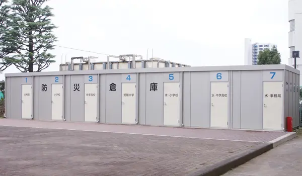

子どもたちの安全と安心を確保するため、様々な対策と訓練を実施しています。
特に子どもたちは都内近郊の様々な地区から通学しているため、通学時の危機管理も徹底しています。
また、通学地区ごとに縦割り班を編成するなど、緊急時でも子どもが孤立しない体制づくりを整えています。
地震や火災などの災害時に、迅速かつ安全に子どもたちを校庭などの安全な屋外に避難させるための訓練を実施しています。
住んでいる地域ごと、あるいは同じ方面に下校する子ども達が班を作り、緊急時に備えて集団下校できるようにしています。
学期毎に一度、地区別班で昼食を摂ったり、遊んだりしながら、お互いに親しくなる機会をつくっています。
メールでその旨を保護者に知らせ、学校に迎えに来ていただきます。
保護者が迎えに来られるまでは、学校で責任をもって保護しています。

中高アート広場に防災倉庫を設置し、有事の際にそなえています。
防災倉庫の他にも、小学校校舎内に飲料水・非常用食料等の備蓄を行なっております。

本学園では、正門に守衛室を設置。学外からの来校者はこの守衛室で入退場を管理され、不審者が入場できないよう監視しています。

子どもたちを対象に防犯、不審者対応訓練を実施。地元警察署と連携し、犯罪に巻き込まれそうになった時、不審者に遭遇した時にどのように行動したら良いかを指導しています。

「登下校 ミマモルメ」は、子どものカバンなどに入れたICタグによって、子どもが校門を通過すると、ハンズフリーの無線ICタグが自動で感知してその情報を保護者様の携帯電話などにメールで自動配信します。子ども達と保護者様に安心をお届けすることができます。
また、学校から、保護者様に対して、学級閉鎖や天候原因などによる登下校時間の変更などの通知といった緊急情報も、登録しているアドレスにメールで一斉送信することが可能です。電話連絡網で伝えるよりも確実に、素早く情報を伝達することができ「学校とお家を繋ぐ新しいコミュニケーションのツール」として機能します。
１年生とその保護者対象に、歩道の歩き方、横断の仕方について、地元警察署の方に指導していただきます。

保護者様の協力で交通見守りを実施。子どもたちの安全を守るだけでなく、大人が見守ることで子どもたちに安心を与えます。
水泳指導の際、必要に応じて応急救護ができるようにするため、全教員を対象に、毎年、ＡＥＤと人工呼吸の訓練をしいてます。